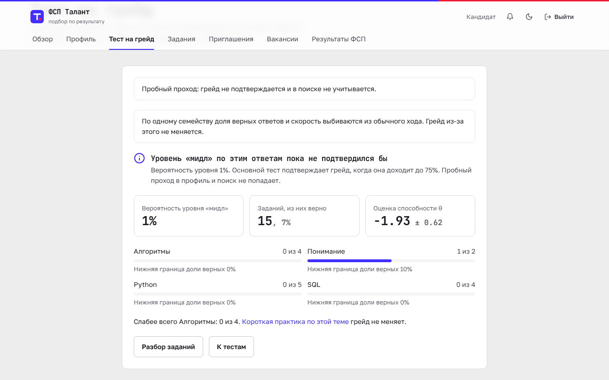
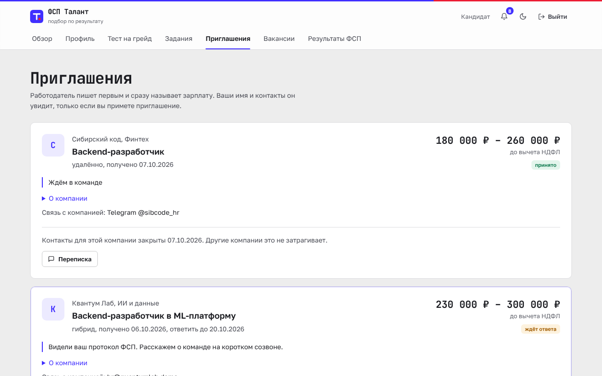
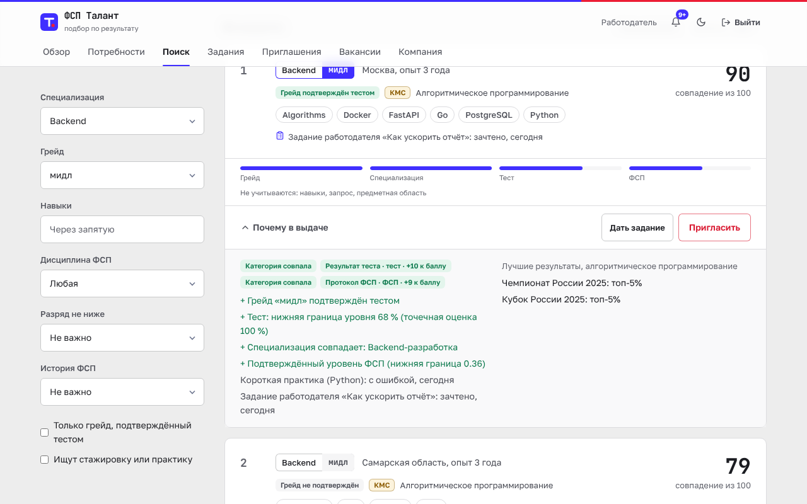

cd backend && python -m app.validation.matching


сдают с ключом от другого экземпляра того же семейства
верных решений вдали от границы грейда, 2000 кандидатов
сдают middle после 20 чужих сессий; честная сдача тех же людей 6,2 %
cd backend && python -m app.validation.assessment --n 2000 --seed 7

cd backend && python -m app.validation.matching
то же решение повторного теста вдали от порога; корреляция θ 0,86, взвешенная каппа 0,58
точность по Руднеру у порога; согласованность 79,0 %
точный итоговый грейд после пути по правилам продукта; в пределах ступени 98,6 %
cd backend && python -m app.validation.assessment --n 2000 --seed 7
Спирмен нижней границы оси со скрытой силой. Разряд — справка из реестра, не расчёт по месту.
Спирмен числа участий: нижняя граница угадывает силу лучше
нижняя граница фермы из 40 онлайн-участий и двух побед
cd backend && python -m app.validation.fsp_axis --seeds 3